Your calculator in the final
Where the brackets go, chi-square, binomial and confidence intervals, step by step
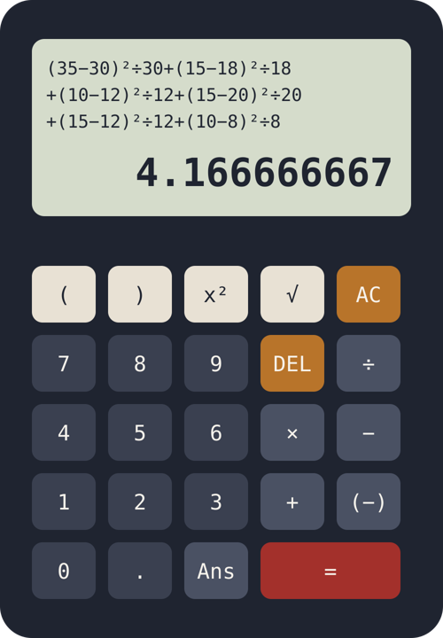
▶ Watch the step-by-step video
Brackets and order of operations
02 | What does the calculator do first?
KEY IDEASame numbers, two ways to type them
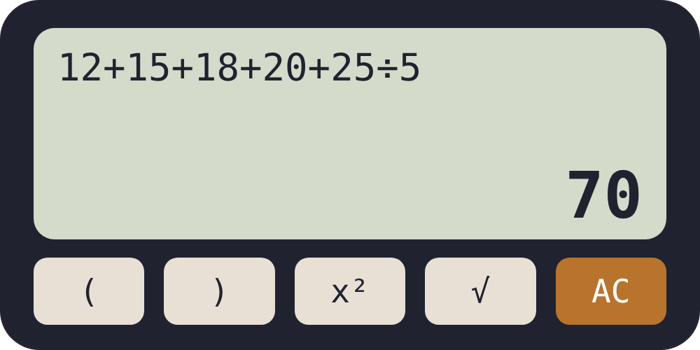
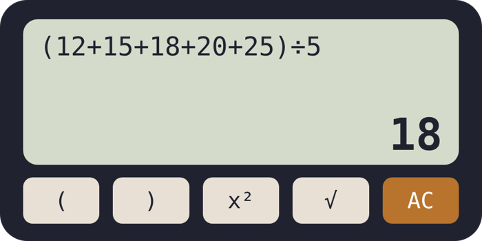
03 | Where do the brackets go?
KEY IDEA① The whole top of a fraction
z = (x − μ) ÷ σ
② The whole bottom of a fraction
bottom is s ÷ √n
③ Everything under √, and close it
standard error of a proportion
④ A subtraction you square
−10² gives −100, (30 − 40)² gives 100
04 | Same formula, with and without brackets
KEY IDEA| Formula | Type it as | Correct | No brackets |
|---|---|---|---|
| Mean Σx ÷ n | (12+15+18+20+25) ÷ 5 | 18 | 70 |
| z = (x − μ) ÷ σ | (85 − 70) ÷ 8 | 1.875 | 76.25 |
| Bottom is s ÷ √n | 0.4 ÷ (1.5 ÷ √(25)) | 1.333 | 0.053 |
| Chi-square term | (50 − 40)² ÷ 40 | 2.5 | 10 |
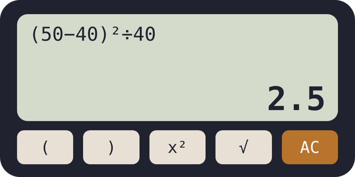
Chi-square, step by step
05 | Chi-square: what each part means
KEY IDEA06 | Chi-square: the observed table
LEVEL 1 · WORKED EXAMPLE100 students were asked their major and their favourite app. Is the favourite app related to the major? (α = 0.05)
| Major | TikTok | Snapchat | Row total | |
|---|---|---|---|---|
| Business | 35 | 15 | 10 | 60 |
| IT | 15 | 15 | 10 | 40 |
| Column total | 50 | 30 | 20 | 100 |
07 | Chi-square: find the expected counts
LEVEL 1 · WORKED EXAMPLE| Cell | Row total | Col total | E = row × col ÷ total | E |
|---|---|---|---|---|
| Business · Instagram | 60 | 50 | 60 × 50 ÷ 100 | 30 |
| Business · TikTok | 60 | 30 | 60 × 30 ÷ 100 | 18 |
| Business · Snapchat | 60 | 20 | 60 × 20 ÷ 100 | 12 |
| IT · Instagram | 40 | 50 | 40 × 50 ÷ 100 | 20 |
| IT · TikTok | 40 | 30 | 40 × 30 ÷ 100 | 12 |
| IT · Snapchat | 40 | 20 | 40 × 20 ÷ 100 | 8 |
| Total | 100 |
Rule
E = row total × column total ÷ grand totalCheck
Total E = 100 = total O. Each row of E adds to its row total.08 | Chi-square on the calculator, then decide
LEVEL 1 · WORKED EXAMPLEType
(35 − 30)² ÷ 30 + (15 − 18)² ÷ 18 + (10 − 12)² ÷ 12 + (15 − 20)² ÷ 20 + (15 − 12)² ÷ 12 + (10 − 8)² ÷ 8 = 4.167- 1df(2 − 1) × (3 − 1) = 2
- 2Critical valueα = 0.05, df = 2 → 5.991
- 3Decide4.167 < 5.991 → Fail to reject H₀
Missing brackets: only 30 is squared.
Type (15 − 18)² instead: it gives 9.
09 | O and E in one table
METHOD 2Same data: major and favourite app, 100 students. The number in brackets is E.
| Major | TikTok | Snapchat | Row total | |
|---|---|---|---|---|
| Business | 35 (30) | 15 (18) | 10 (12) | 60 |
| IT | 15 (20) | 15 (12) | 10 (8) | 40 |
| Column total | 50 | 30 | 20 | 100 |
Where does (30) come from?
E = row total × column total ÷ grand total60 × 50 ÷ 100 = 30
Your turn
Check the other five E values the same way.10 | Write the sum of fractions
METHOD 2On the calculator
(35 − 30)² ÷ 30 + (15 − 18)² ÷ 18 + (10 − 12)² ÷ 12 + (15 − 20)² ÷ 20 + (15 − 12)² ÷ 12 + (10 − 8)² ÷ 811 | Chi-square: the café data
LEVEL 2 · GUIDED PRACTICEA café recorded the age group and payment method of 200 customers. Is payment method related to age? (α = 0.05)
| Age group | Card | Apple Pay | Cash | Row total |
|---|---|---|---|---|
| Under 25 | 30 | 55 | 15 | 100 |
| 25 and over | 50 | 25 | 25 | 100 |
| Column total | 80 | 80 | 40 | 200 |
12 | Chi-square: you find the expected counts
LEVEL 2 · GUIDED PRACTICE| Cell | Row total | Col total | E = row × col ÷ total | E |
|---|---|---|---|---|
| Under 25 · Card | 100 | 80 | 100 × 80 ÷ 200 | |
| Under 25 · Apple Pay | 100 | 80 | ||
| Under 25 · Cash | 100 | 40 | ||
| 25+ · Card | 100 | 80 | ||
| 25+ · Apple Pay | 100 | 80 | ||
| 25+ · Cash | 100 | 40 | ||
| Total |
⚠ Check
Your E column must add up to 200, the same as O.13 | Chi-square: you complete the table
LEVEL 2 · GUIDED PRACTICE| Cell | O | E | (O − E)² | (O − E)² ÷ E |
|---|---|---|---|---|
| Under 25 · Card | 30 | |||
| Under 25 · Apple Pay | 55 | |||
| Under 25 · Cash | 15 | |||
| 25+ · Card | 50 | |||
| 25+ · Apple Pay | 25 | |||
| 25+ · Cash | 25 | |||
| Total | 200 |
Critical value = 5.991
Reject H₀? Yes / No
Independent or dependent?
14 | Chi-square: check your answer
LEVEL 2 · ANSWER| Cell | O | E | (O − E)² ÷ E |
|---|---|---|---|
| Under 25 · Card | 30 | 40 | 2.5 |
| Under 25 · Apple Pay | 55 | 40 | 5.625 |
| Under 25 · Cash | 15 | 20 | 1.25 |
| 25+ · Card | 50 | 40 | 2.5 |
| 25+ · Apple Pay | 25 | 40 | 5.625 |
| 25+ · Cash | 25 | 20 | 1.25 |
| Total | 200 | 200 | χ² = 18.75 |
- 1df(2−1)(3−1) = 2
- 2Critical5.991
- 3Decide18.75 > 5.991
Hypotheses
H₀: age and payment method are independent.H₁: age and payment method are dependent.
15 | Chi-square on your own
LEVEL 3 · INDEPENDENT150 students: did they attend the review sessions, and did they pass the final? Is passing related to attending? (α = 0.05)
| Attended reviews | Pass | Fail | Row total |
|---|---|---|---|
| Yes | 48 | 12 | 60 |
| No | 52 | 38 | 90 |
| Column total | 100 | 50 | 150 |
Your steps
① Write H₀ and H₁② Find E = row × column ÷ grand total
③ Build the (O − E)² ÷ E table
④ df and critical value
⑤ Decide: independent or dependent?
16 | Chi-square on your own: check your answer
LEVEL 3 · ANSWER| Cell | O | E = row × col ÷ total | E | (O − E)² ÷ E |
|---|---|---|---|---|
| Yes · Pass | 48 | 60 × 100 ÷ 150 | 40 | 1.600 |
| Yes · Fail | 12 | 60 × 50 ÷ 150 | 20 | 3.200 |
| No · Pass | 52 | 90 × 100 ÷ 150 | 60 | 1.067 |
| No · Fail | 38 | 90 × 50 ÷ 150 | 30 | 2.133 |
| Total | 150 | 150 | χ² = 8.0 |
- 1df(2−1)(2−1) = 1
- 2Critical3.841
- 3Decide8.0 > 3.841
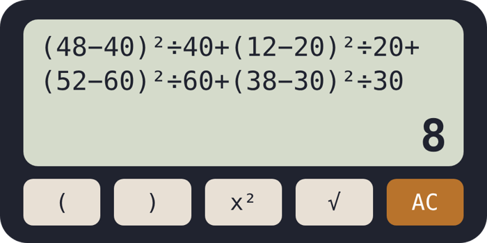
Binomial probability
17 | Binomial: what each part means
KEY IDEA18 | Binomial on the calculator
LEVEL 1 · WORKED EXAMPLE30% of students buy a coffee before class. 10 students are chosen at random. Find P(X = 3).
- 1Decoden = 10 · x = 3 · p = 0.3 · 1 − p = 0.7 · n − x = 7
- 2Substitute10C3 × 0.3^(3) × (1 − 0.3)^(7)
- 3AnswerP(X = 3) = 0.2668
nCr on the calculator
Casio: 10 SHIFT ÷ 3 → 120Missing brackets around (1 − 0.3). A probability can never be bigger than 1.
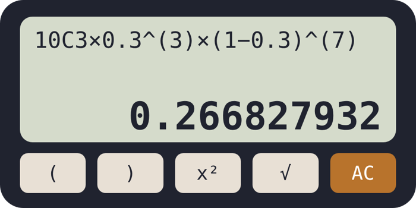
19 | Binomial on your own
LEVEL 2 · PRACTICEA fair coin is tossed 8 times. Find the probability of exactly 2 heads.
20 | Binomial on your own: check your answer
LEVEL 2 · ANSWER- 1Decoden = 8 · x = 2 · p = 0.5 · 1 − p = 0.5 · n − x = 6
- 2Substitute8C2 × 0.5^(2) × (1 − 0.5)^(6)
- 3AnswerP(X = 2) = 0.1094
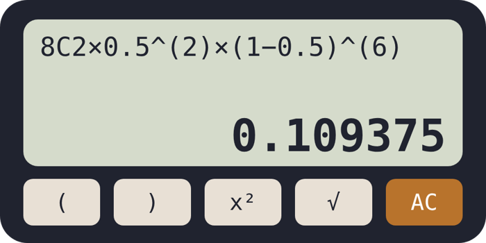
Confidence intervals
21 | Confidence interval for a mean
KEY IDEALower limit
type −
Upper limit
type +
| Level | z |
|---|---|
| 90% | 1.645 |
| 95% | 1.96 |
| 99% | 2.576 |
22 | Mean: lower and upper limits
LEVEL 1 · WORKED EXAMPLE25 students have a mean score of 72. σ = 10. Find a 95% confidence interval for μ.
- 1Decodex̄ = 72 · σ = 10 · n = 25 · z = 1.96
- 2Substitute72 ± 1.96 × (10 ÷ √(25))
Lower limit = 68.08
Upper limit = 75.92
Divide by √(25), not by 25.
23 | Proportion: lower and upper limits
LEVEL 1 · WORKED EXAMPLE120 of 200 students use Instagram. Find a 95% confidence interval for p.
- 1Decodep̂ = 120 ÷ 200 = 0.6 · n = 200 · z = 1.96
- 2Substitute0.6 ± 1.96 × √(0.6 × (1 − 0.6) ÷ 200)
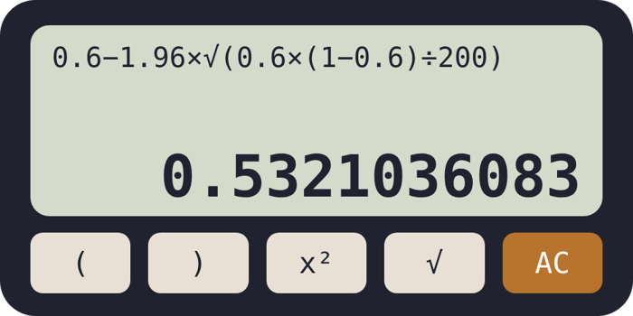
Lower limit = 0.532
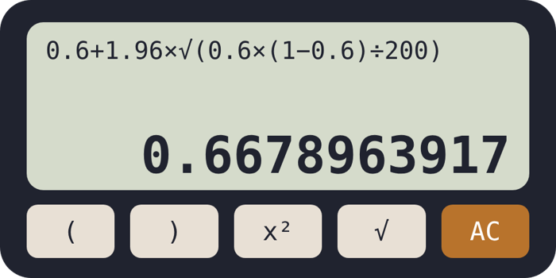
Upper limit = 0.668
24 | Confidence interval on your own
LEVEL 2 · PRACTICE36 coffees have a mean temperature of 50 °C. σ = 12. Find a 90% confidence interval for μ.
25 | Confidence interval: check your answer
LEVEL 2 · ANSWER- 1Decodex̄ = 50 · σ = 12 · n = 36 · z = 1.645
- 2Substitute50 ± 1.645 × (12 ÷ √(36))
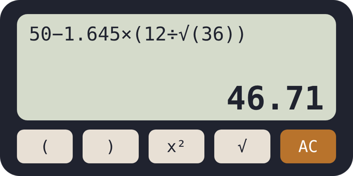
Lower limit = 46.71
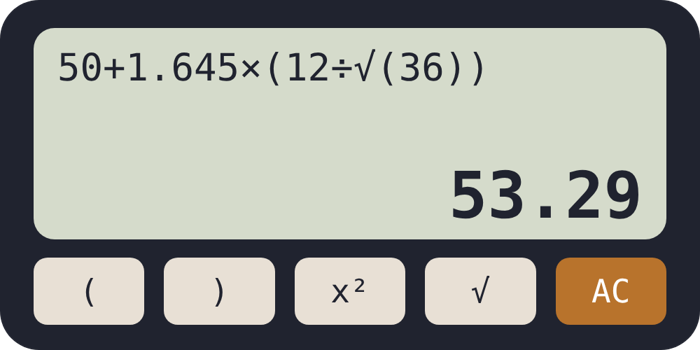
Upper limit = 53.29